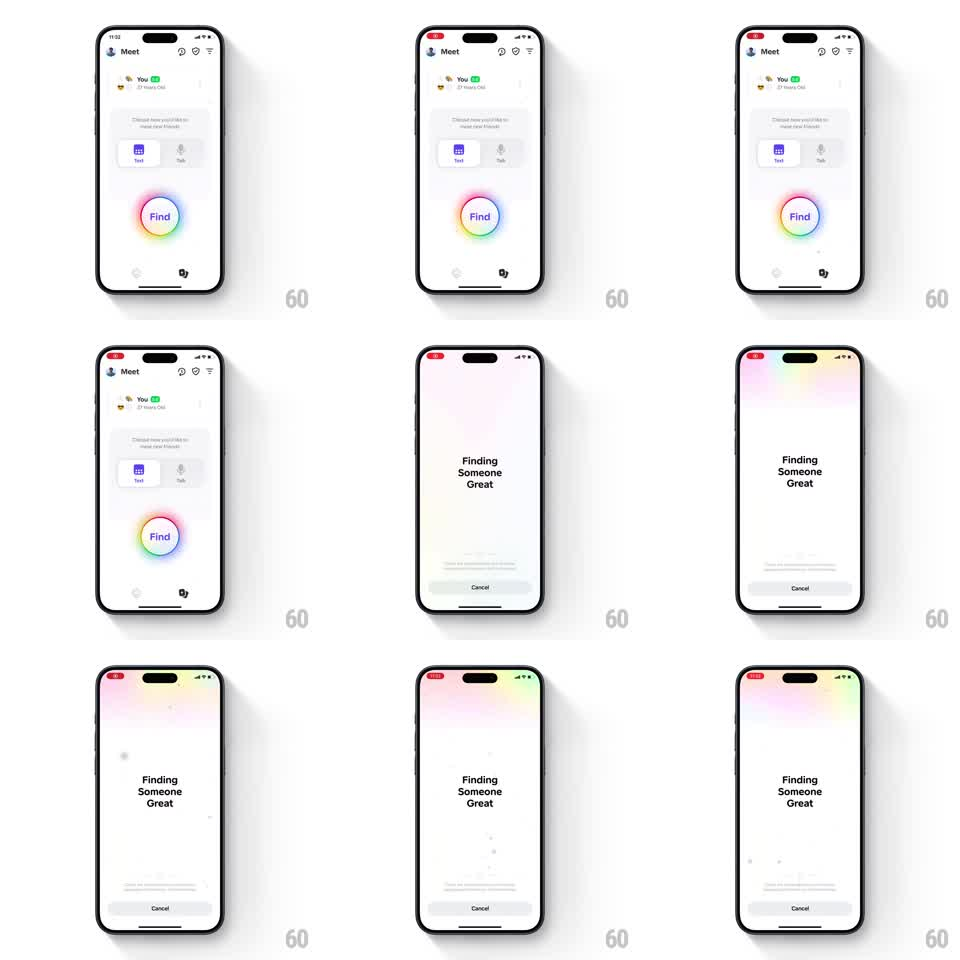

Media
Frame-by-frame

Rebuild this interaction 1:1: Honk's "Find" transition - tapping the rainbow-ringed Find button expands its gradient border into a full-screen searching state titled "Finding Someone Great".

Rebuild this interaction 1:1: Honk's "Find" transition - tapping the rainbow-ringed Find button expands its gradient border into a full-screen searching state titled "Finding Someone Great". ## Integration Integration: stack-agnostic spec - springs given as stiffness/damping, timed motions as duration + curve; map every value to your framework and animation library of choice. ## Scene The "Meet" screen: profile row, "Choose how you'd like to meet new friends" with Text/Talk options, and center-stage a large circular "Find" button wrapped in a soft rainbow gradient ring. After the tap: a searching screen - the rainbow gradient spread across the top of a white screen, "Finding Someone Great" headline, muted status line, and a Cancel pill at the bottom. ## Motion spec Pattern: gradient-ring expansion into full-screen state. - Tap Find: the button compresses (scale 0.95, 100ms) and its rainbow ring begins expanding outward (scale to fill screen width, 450ms, ease-out), softening into a diffuse gradient wash that settles across the top third of the screen. - As the ring expands, the Meet screen's content fades (250ms) and the searching state fades up beneath the gradient: headline first (250ms), status line 80ms later, Cancel pill sliding up last (spring ~340/26). - The gradient breathes while searching (hue drifts slowly, ~4s loop) - the rainbow is alive, not a static backdrop. - Subtle floating particles drift up through the gradient (2-3 soft dots, 3s loops). - Cancel: the gradient contracts back into the ring around the Find button (reverse animation, 400ms), Meet content fading back in. ## Calibration - The expanding ring must read as the same element as the button border - continuous color and curvature through the expansion. - The gradient stays soft and pastel at full spread; hard rainbow bands would feel cheap. ## Reduced motion Crossfade between screens; static gradient. ## Don't miss - The "Find" label sits inside the ring and crossfades out as the expansion begins - it never stretches. - Cancel is a quiet gray pill, visually subordinate to the headline.